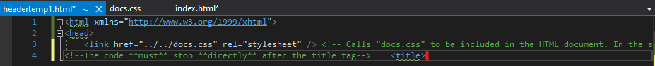
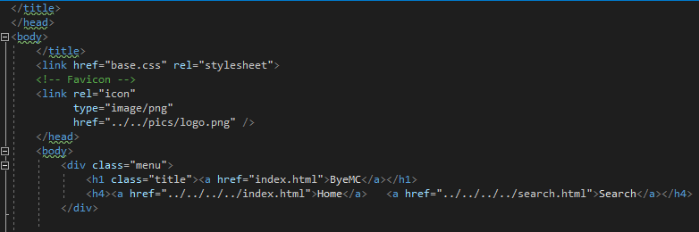
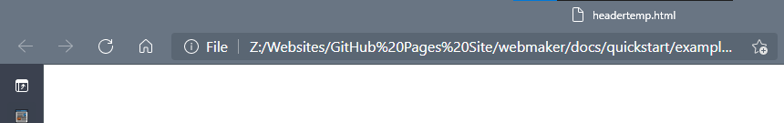
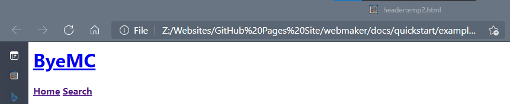

Note: This guide is up-to-date for Website Maker v0.2-alpha.2. Please update if you are using an older verion.
| Table of contents |
|---|
| 1: Before you start |
| 1.1: Downloading |
| 1.2: Setup |
| 2: Usage |
| 2.1: Windows |
| 2.1.1: Reccommended |
There are two offical ways to install Website Maker. There are also multiple versions of Website Maker. This tutorial focuses on the Windows command-line version, but most advice does carry over to the universal command-line version.
With that sorted, let's go downloading! First go to either the Github page or the Itch page and download WebsiteMaker.exe or webmaker.py, but not anything starting with webmakergui.
Now make two files, one called headertemp.html and another called headertemp2.html. Type out your header code as usual, but stop when you finish the opening title tag save and close the file.
|  |
This is how to end headertemp.html |
In headertemp2.html, continue on as normal, but leave out the title. Make sure to insert the menu for your website now, as you will have to edit the code later to add it in. Save and close the file when you've finished with the header.
|  |
Continue on with headertemp2.html, but don't add a title or body. |
When you open both files, headertemp.html should look blank, and headertemp2.html should have your header and menu.
|  |
As you can see, headertemp is blank, and headertemp2 has no formatting (as it's in headertemp) |
Now, copy and 1 the file you downloaded into the folder with the files you created earlier.
Now, if you're are using the .exe version, double-click the file.
Follow the instuctions onscreen and open the resulting file.
You can use the raw Python files (downloadable from the same link as before), but you need Python 3 installed on your PC. Just move the downloaded file to the same folder as the headertemp files, then double-click the file.
Make sure you've downloaded the webmaker.py file and have copied it to the directory with the headertemp files. Open a terminal window in the folder with the files, or, if you use macOS, follow these steps: 1
Command+Space bar and search for Terminal. cd command to go to the directory with the Python file. In the photo it's the Documents folder.python3 WebsiteMaker.py into the terminal. If you see a message like the one in the screenshot, press Install and wait for it to install.python3 WebsiteMaker.py again. If it crashes, check that the headertemp files are in the same folder as the downloaded files. Check that a message asking for the filename of the file you want to create appears. If it does you've used it correctly!